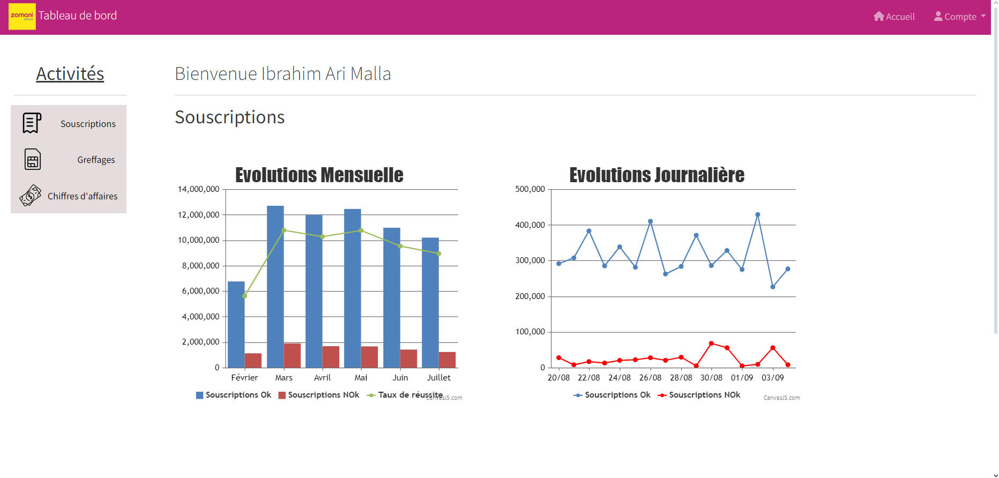
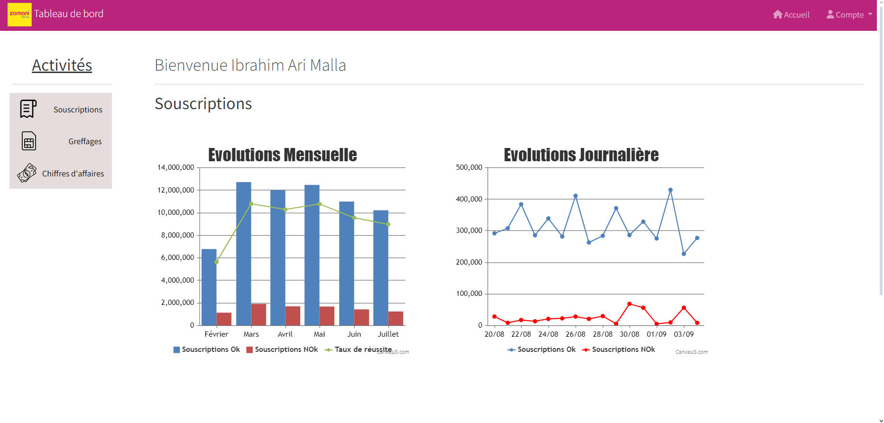

Présentation du projet
En salle de Réunion on m'a présenter la réalisation que j'aurais à accomplir
Il s'agira d'automatiser un compte-rendu pour l'afficher sur un tableau de bord attrayant.
Les données ciblés sont :
- L'évolution des Souscriptions (forfaits) journalière ou mensuel.
- Le Chiffre d'affaires avec le nombre de subcription.
- Les données Sims par semaine.
- Les greffages.
Il s'agit d'un développement continue, ce qui signifie qu'il va falloir développer plusieurs versions jusqu'à avoir un resultat satifesants.
 
